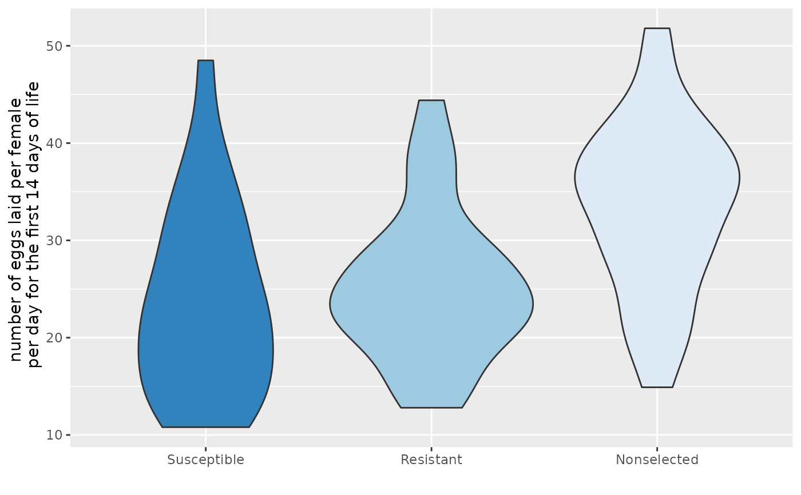

Drosophila Melanogaster
DROSOPHILA contains per diem fecundity (number of eggs laid per female per day for the first 14 days of life) for 25 females from each of three lines of Drosophila melanogaster. The three lines are Nonselected (control), Resistant, and Susceptible.
DROSOPHILA
Format
A data frame with 75 observations on the following 2 variables:
-
fecundity(number of eggs laid per female per day for the first 14 days of life) -
line(a factor with levelsNonselected,Resistant, andSusceptible)
Source
The original measurements are from an experiment conducted by R. R. Sokal (Biometry by Sokal and Rohlf, 1994, p. 237).
References
- Sokal, R. R. and Rohlf, F. J. 1994. Biometry. W. H. Freeman, New York, third edition.
- Ugarte, M. D., Militino, A. F., and Arnholt, A. T. 2015. Probability and Statistics with R, Second Edition. Chapman & Hall / CRC.
Examples
ggplot(data = DROSOPHILA, aes(x = reorder(line, fecundity, FUN = median), y = fecundity, fill = line)) + geom_boxplot() + guides(fill = FALSE) + labs(y ="number of eggs laid per female \n per day for the first 14 days of life", x = "") + scale_fill_brewer()ggplot(data = DROSOPHILA, aes(x = reorder(line, fecundity, FUN = median), y = fecundity, fill = line)) + geom_violin() + guides(fill = FALSE) + labs(y ="number of eggs laid per female \n per day for the first 14 days of life", x = "") + scale_fill_brewer()summary(aov(fecundity ~ line, data = DROSOPHILA))#> Df Sum Sq Mean Sq F value Pr(>F) #> line 2 1362 681.1 8.666 0.000424 *** #> Residuals 72 5659 78.6 #> --- #> Signif. codes: 0 ‘***’ 0.001 ‘**’ 0.01 ‘*’ 0.05 ‘.’ 0.1 ‘ ’ 1 #>